WIELKI KONKURS na łamigłówkę matematyczną ZAMKNIĘTY
Laureaci konkursu:
Tablety przyznane autorom najlepszych łamigłówek:
- W kategorii nauczyciele: Agnieszka Pater
- W kategorii uczniowie: Adrian Zachariasz
Drogą losowania kubki wędrują do głosujących:
- Ewelina Banasiewicz
- Michał Czakon
- Karolina Dłutowska
- Alicja Gawrońska
- Daria Kotulska
- Wiktoria Lorek
- Wiktor Obałek
- Klaudia Radziejewska
- Filip Sitek
- Patrycja Żurawska
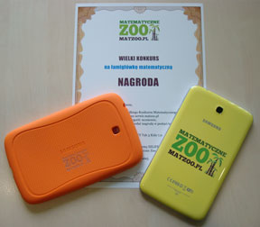
Konkursowe łamigłówki:
-
Wielkanocne jajka 1568 pkt.
Cztery siostry: Ilona, Patrycja, Oliwia i Wiktoria zrobiły po jednym jajku wielkanocnym - każde inne i ułożyły je w szeregu. Jajka wyglądają następująco: czerwone w trójkąty, żółte w kółka, czerwone w kółka i niebieskie w kwadraty. Ilony jajko nie jest koloru czerwonego. Pomiędzy jajkami Patrycji i Oliwii stoją jajka pozostałych sióstr. Skrajne jajka nie są koloru żółtego. Wiktorii jajko jest czerwone i stoi obok jajka Patrycji. Ilony jajko nie sąsiaduje z takim, które jest w kółka.
Jak wyglądają poszczególne jajka sióstr?
autor: Adrian Zachariasz (uczeń, klasa V) nagroda: tablet
-
Lubiany Miś 1167 pkt.
Mama Hania kupiła prezenty Idze, Kasi, Emilce i Zuzi. Komu mama kupiła różowego misia? Skoro wiemy że:
A) Emilka nie bawi się zabawkami
B) Kasia nie dostała misia
C) Zuzia jest najmniejsza
D) Iga lubi tylko kolor pomarańczowyautor: Emilia Paterek (uczeń, klasa IVa)
-
Balonowa zagadka 1120 pkt.
Na urodzinach u Leny spotkały się 4 koleżanki. Było tam 36 balonów, które Lena podarowała dziewczynom, zostawiając sobie także pewną ich ilość. Solenizantce zostało o 16 balonów mniej niż na początku przyjęcia. Emila i Pola dostały po tyle samo balonów, a Wiktoria otrzymała ich dwa razy mniej niż Lena.
Ile balonów dostała każda z dziewcząt?
autor: Lena Maćkowiak (uczeń, klasa IV A)
-
Krzyżówka MATZOO 1065 pkt.
Rozwiąż krzyżówkę, a następnie wpisz litery z kratek o poniższych numerach i odczytaj hasło.
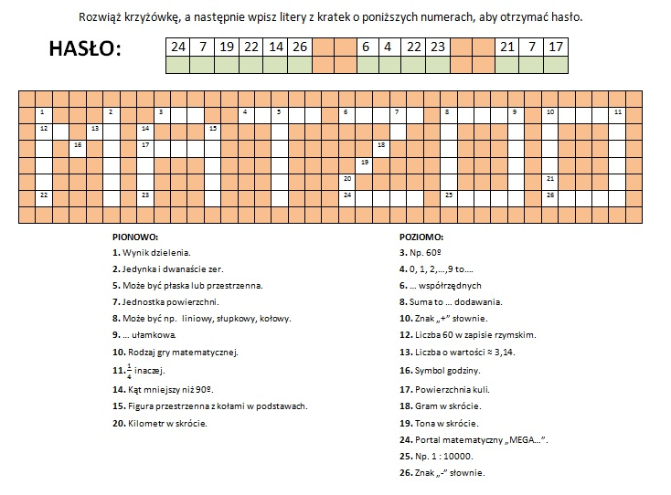
autor: Agnieszka Pater (nauczyciel) nagroda: tablet
-
Gruba lektura 640 pkt.
Oto podsłuchana rozmowa dwóch uczniów na szkolnym korytarzu:
- Ojej, znowu musimy przeczytać lekturę na język polski...
- A gruba ta książka? Ostatnia miała aż 200 stron!
- Do numeracji jej stron użyto aż 300 cyfr, więc chyba jeszcze grubsza...
Ile stron miała ta lektura?
autor: Justyna Chudy (nauczyciel)
-
Trójkąty 539 pkt.
.
autor: Adam Szancer (uczeń, klasa 2a)
-
Ile leciało bocianów? 476 pkt.
Hubert i Lilka wybrali się na wiosenny spacer. Nagle Lilka woła: Zobacz Hubert, wracają bociany. Ale ich dużo, leci chyba ze 100! Hubert odpowiada: Lilka, leci ich dużo, ale musi ich lecieć jeszcze raz tyle samo, jeszcze połowa i jeszcze ćwierć i Ty jedna, wtedy dopiero będzie ich 100. Pomóż Lilce obliczyć, ile leciało bocianów?
autor: Hubert Baranowski (uczeń, klasa 5)
-
Tajemnicze liczby 373 pkt.
Różnica 2 liczb całkowitych wynosi 3, a suma tych liczb wynosi 7. Jakie to liczby?
autor: Aleksandra Turlej (uczeń, klasa 6)
-
Zmień jedną zapałkę 347 pkt.
Przesuń jedną zapałkę tak, aby powstała prawdziwa równość.
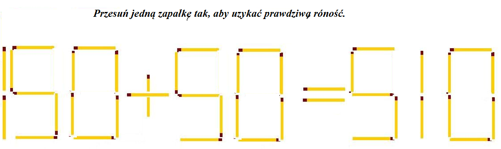
autor: Adam Jędrzejek (uczeń, klasa 4)
-
Karty UEFA EURO 2012 331 pkt.
Opakowanie kart UEFA EURO 2012 kosztuje 3,90 zł. W środku jest 6 kart.
A) Ile kosztuje jedna karta?
B) Ile kosztuje 99 kart ?
C) Janek rozciął nożyczkami opakowanie z kartami na cztery części. Ile jest teraz części kart?
autor: Anna Koruch (uczeń, klasa 0)
-
Kwadratowe trójki 327 pkt.
Zagadka w rysunku
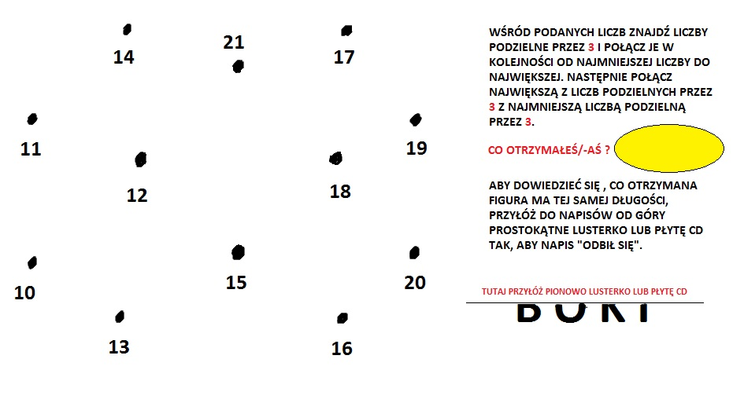
autor: Zuzanna Kowalewska (uczeń, klasa 4a)
-
Pozbyć się śmieci 288 pkt.
.
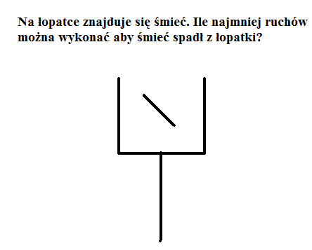
autor: Jakub Janikowski (uczeń, klasa 4)
-
Magiczny kwadrat 231 pkt.
Jaką liczbę należy wpisać wmiejsce znaku zapytania?
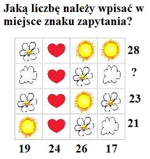
autor: Julita Stokłosa (uczeń, klasa 4)
-
Koty i wrony 202 pkt.
Przeleciało stado wron i usiadły na drzewie. Gdyby każda wrona opowiedziała dostępnym kotom po jednym dowcipie, to dla wrony zabrakłoby jednego kota. Gdyby dwie wrony opowiedziały każdemu kotu po dwa dowcipy to jeden kot nie usłyszał by dowcipu. Ile było wron, a ile kotów?
autor: Natalia Kmiotek (uczeń, klasa 6a)
-
Liczba 161 pkt.
Przełóż 1 kreskę, by wyszło sto.
autor: Wiktoria Warkocka (uczeń, klasa 4)
-
Ułamki z zapałkami 124 pkt.
Ile najmniej trzeba przestawić zapałek tak, aby powstał ułamek 1/9 ? (kreska ułamkowa złożona z dwóch zapałek tak jak na rysunku).
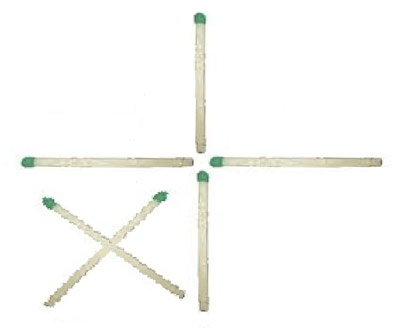
autor: Oskar Czupowski (uczeń, klasa 5)
-
Liczbowy kwiatek 106 pkt.
Joasia narysowała kwiatek, na którym umieściła liczby. Odgadnij jaką liczbę powinna wpisać Joasia na następnym listku.
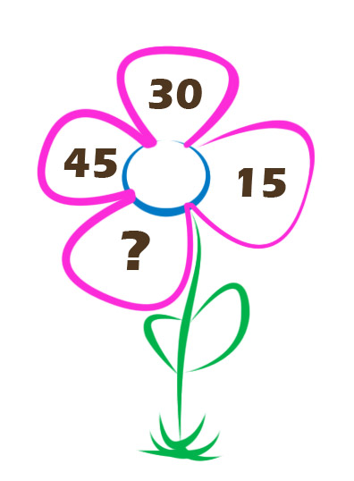
autor: Dominika Jakubek (uczeń, klasa 4)
-
Schronisko dla zwierząt 105 pkt.
30 października w schronisku było: 152 psy i 2 koty. Ile zwierząt było w schronisku (ile kotów i ile psów) 30 marca jeśli codziennie ubywał 1 pies i dochodził 1 kot, a co 10 dni dochodziły 2 psy i ubywały 2 koty.
autor: Mikolaj Legawiec (uczeń, klasa 5)
-
Warta harcerzy 98 pkt.
Na kwadratowy plac apelowy wyszedł drużynowy 1 zastępu w celu rozstawienia warty. Postawił wzdłuż każdego końca placu 4 harcerzy i odszedł. Po chwili przyszedł zastępca komendanta i postawił wzdłuż każdego boku 5 harcerzy, w końcu pojawił się komendant i postawił wzdłuż każdego boku 6 harcerzy. Jakie było ustawienie w 1, 2, 3 przypadku skoro liczba harcerzy nie zmieniła się?
autor: Katarzyna Fredyk (nauczyciel)
-
Owce na hali górskiej 72 pkt.
Owce szły na halę. Pierwsza owca obejrzała się i powiedziała: jeśli byłoby nas jeszcze raz tyle, pół raza tyle i ćwierć raza tyle, to byłoby nas sto.
Ile było owiec?
autor: Wojtek Nyc (uczeń, klasa 3c)
-
Kot 68 pkt.
Żył zobie zarozumiały kot, który chwalił się, że jego ogon mierzy 12 centymetrów i jeszcze pół ogona. Jaką długość mierzy ogon kota?
autor: Wiktoria Siuda (uczeń, klasa V)
-
Kuba, skala i droga do szkoły 66 pkt.
Kuba idzie z domu do sklepu 10 minut. Tata powiedział, że szkoła znajduje się dokładnie w połowie drogi dom Kuby - sklep, a w ciągu godziny Kuba może przejść 6 km. Na mapie odległość pomiędzy domem a szkołą Kuby wynosi 5 cm. W jakiej skali jest mapa?
autor: Michał Owsiejew (uczeń, klasa IV)
-
Słoń i mrówka 56 pkt.
Słoń i mrówka bawią się w chowanego. Niestety słoń siadł na mrówce. Mrówka zaczęła krzyczeć:
- Słoniu, słoniu widzę gwiazdki!
- Ile gwiazdek widzisz i jakiego one są koloru? - Zaciekawił się słoń.
- Połowa gwiazdek jest żółta, z pozostałych połowa jest zielona. Połowa z tych, które zostały jest czerwona, a 4 gwiazdki są niebieskie.
Ile gwiazdek widziała mrówka?
autor: Paulina Kozłowska (uczeń, klasa 4)
-
Trudny problem z podziałem na grupy 54 pkt.
Nauczyciel chciał, aby klasa pracowała w grupach. Gdy podzielił uczniów na czteroosobowe grupy, jeden uczeń został bez przydziału. Gdy podzielił uczniów na trójki, również jeden uczeń został samotny. Nauczyciel podzielił więc uczniów po 2 i tym razem jedna osoba została sama.
Ilu co najmniej uczniów liczy ta klasa?
autor: Justyna Chudy (nauczyciel)
-
Tablet w kieszeni? 48 pkt.
Czy mój tablet o przekątnej 10 cali zmieści mi się do bardzo głębokiej kieszeni o szerokości 14 cm? Tablet ma ekran o proporcjach 4:3, a ramka dookoła ekranu ma jednakową szerokość 1 cala, czyli 2,54 cm.
autor: Dorota Strzelecka (nauczyciel)
-
Bocianie obliczenie 35 pkt.
Bocian w ciągu roku pokonuje dystans ok. 12 000 km. Ile kilometrów przelatuje w ciągu 12 lat?
autor: Marta Izdebska (uczeń, klasa 4)
-
Pudełka 29 pkt.
Było jedno czerwone pudełko. A w tym pudełku były dwa niebieskie pudełka. A w obu niebieskich pudełkach były cztery zielone pudełka. A we wszyskich zielonych pudełkach były dwa pomarańczowe pudełka. Ile jest wszystkich pudełek?
autor: Tymoteusz Kopa (uczeń, klasa 4)
-
Zadanie Świętego Mikołaja 28 pkt.
Pewnego razu, pod koniec sierpnia, Mikołaj powiedział do siebie:
- Zrobiłem już 16 miliardów zabawek. Na świecie jest 7 miliardów dzieci.Ile zabawek dostanie każde dziecko jeżeli Święty Mikołaj co miesiąc będzie robił 3 miliardy zabawek?
autor: Jakub Załęski (uczeń, klasa 4a)
-
Karpik z Marzenką idzie łowić ryby z jeziorka 27 pkt.
Karpik wraz z Marzenką poszli łowić rybki z głębokiego jeziorka. Złapali: 32 karpie, 12leszczy i o 100 płoci więcej niż karpi i leszczy. Oraz: 10 srebrzyków, 18 tołpyg i 92 razy więcej jesiotrów niż srebrzyków i tołpyg.
Ile ryb złowili Karpik i Marzenka?
autor: Wiktoria Waśkiewicz (uczeń, klasa 3)
-
Ile jedzą krowy? 24 pkt.
Jeżeli każda krowa w ciągu godziny je tyle samo, a dwie krowy w ciągu dwóch godzin zjadły dwa kilogamy trawy, to ile trawy zje jedna krowa w ciągu jednej godziny?
autor: Paulina Kozłowska (uczeń, klasa 4)
-
Fabryka Papirus 21 pkt.
W lutym 2014 fabryka Papirus pracowała w dni robocze. Produkowała dziennie 300 tys. kartek papieru. W każdy piątek drukarnia Kleks kupowała 1 mln kartek z fabryki Papirus.
Ile kartek zostanie w magazynie fabryki Papirus w dniu 28 lutego 2014 jeśli drukarnia Kleks jest jedynym odbiorcą?autor: Weronika Jóźwiuk (uczeń, klasa 6)
-
Matki i córki 20 pkt.
Dwie córki i dwie matki siedzą na 3 krzesłach.
Jak to możliwe?
autor: Kornelia Zdziechowicz (uczeń, klasa 4)
-
Wymarzone wakacje 19 pkt.
Monika wybiera się na czterodniową wycieczkę do Hiszpanii. Uzbierała 9 800 zł. 1/5 tej kwoty przeznaczyła na kupno biletu. Na noclegi z całodziennym wyżywieniem (śniadanie, obiad, kolacja) przeznaczyła 1/2 pozostałej kwoty. Na zakup pamiątek postanowiła wydać 1/4 reszty pieniędzy.
Oblicz łączny koszt wycieczki Moniki, jeśli pierwszego dnia ma zamiar skorzystać tylko z obiadu i kolacji, a czwartego dnia tylko ze śniadania?
autor: Patrycja Lisowska (uczeń, klasa VI)
-
Tajemnica 18 pkt.
Pani Filarska spotkała 9 osób i zdradziła im pewną tajemnicę.
Każda z 9 osób spotkała 9 innych osób i też zdradziły im tę tajemnicę.
Ile osób zna tajemnicę pani Filarskiej ?
autor: Natalia Foks (uczeń, klasa 4)
-
Festiwal Piosenki 17 pkt.
Sto osób w tym 50 dzieci oraz 50 osób dorosłych zebrało się na ulicy Piastów, aby bawić się na festiwalu piosenki.
Ile będzie rodzin, jeżeli każda ma po 5 osób (w tym 2 dorosłych)?
Ile osób dorosłych nie ma dzieci?
Ile rodzin ma mniej niż troje dzieci?
autor: Magdalena Falkowska (uczeń, klasa VI)
-
Krzyżówka 16 pkt.
Pytania do krzyżówki:
1. Oznaczamy ją symbolem „x”, „y” lub „a”, „b”?
2. Nauka o cyfrach, liczbach i figurach to ...
3. 2; 4; 6; 8 to liczby …
4. Liczba 1,06 jest mniejsza czy większa od 1,60?
5. Niektóre liczby są złożone, a inne …
6. Co to za dziwna figura, że niewiadomo gdzie dół, a gdzie góra?
7. Mierzysz nim kąty.
8. Wynik odejmowania?
9. Prosta ograniczona dwoma punktami?
10. Suma to wynik …
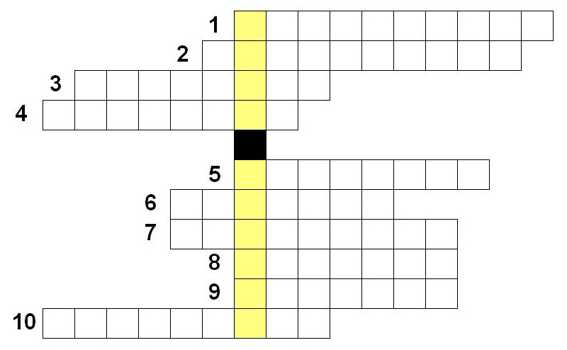
autor: Aleksandra Rytelewska (uczeń, klasa 4)
-
Z domu Agatki do szkoły 15 pkt.
Na planie miasta w skali 1 cm - 100 m odległość z domu Agatki do jej szkoły wynosi 15 cm.
Jaka to odległość w rzeczywistości?
autor: Marta Izdebska (uczeń, klasa 4)
-
Uczta Kubusia Puchatka 15 pkt.
Kubuś Puchatek zjadł na śniadanie 3 garnuszki miodu, na drugie śniadanie 5 garnuszków.
Po drugim śniadaniu przyszedł prosiaczek i pożyczył 6 garnuszków .
Na obiad przyszło 7 przyjaciół Kubusia i każdy zjadł po 3 garnuszki miodu, łącznie z Kubusiem.
Na kolacje zjadł 4 garnuszki miodu.
Ile miodu zostało Puchatkowi jeśli miał 83 garnuszki?
autor: Julia Moleń (uczeń, klasa 5)
-
Zadanie tekstowe 14 pkt.
Oliwia ma 10 butelek soku po 1/2 litra, 5 po 3/4 i 8 po 5/5 ma także jeszcze 1 słoik z miodem z niewiadomą objętością, ale wiadomo że to wszystko ma 20 litrów.
Ile litrów mają butelki soku, a ile litrów ma słoik miodu?
autor: Sandra Roman (uczeń, klasa 5)
-
Kosmici w poszukiwaniu nowych planet 13 pkt.
64 Kosmitów szuka nowych planet. Znaleźli już dwie, jedną zamieszkuje 26 kosmitów, a mieści się na niej 90 kosmitów, drugą zamieszkuje 36 kosmitów, a zmieści się na niej 100 kosmitów. Na której planecie zmieszczą się kosmici?
autor: Jakub Mazurowski (uczeń, klasa 3d)
-
Restauracja 13 pkt.
Do restauracji przyszło 101 osób. 50 mężczyzn, 50 kobiet i jedno dziecko. Budynek restauracji waży 25 ton. Mężczyzna waży dwa razy więcej od kobiety i razem ważą 180 kg. Ile waży dziecko jeżeli jego waga stanowi 0,001 całej wagi restauracji z ludźmi?
autor: Juliusz Sarna (uczeń, klasa 6)
-
Iloczynowa krzyżówka 13 pkt.
1. Jeden z czworokątów.
2. Wynik mnożenia.
3. Czworokąt, który ma dwie pary boków równoległych.
4. Liczba np. 1, 2, 3, nazywamy ją.
5. Liczba, która ma więcej niż dwa dzielniki.
6. Najdłuższy bok trójkąta prostokątnego.
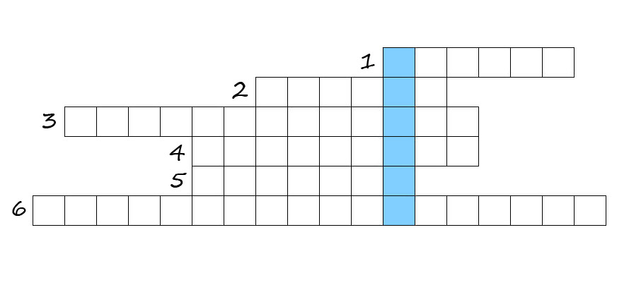
autor: Mariusz Bałut (uczeń, klasa 5)
-
Serowa sprawa 13 pkt.
Pani Aldona kupiła 3,5 kg sera, 50 soczków po 2,67 zł za jeden i 24 sztuk pizzy. Osiem pizz kupiła po 28,70 zł za jedną , 2/4 pizz co zostało kupiła po 23,80 zł za jedną, a resztę pizz kupiła po 19,80 zł.
Ile kosztował ser, jeżeli za wszystko zapłaciła 800 zł?
autor: Weronika Kowalska (uczeń, klasa VI)
-
Czy potrafisz liczyć? 12 pkt.
Jeśli:
dwa +dwa = sześć +1,
to ile to będzie
trzy + trzy = osiem + ?
autor: Małgorzata Kiełbasa (nauczyciel)
-
Sklep komputerowy 12 pkt.
W sklepie komputerowym było: 100 komputerów, 104 drukark i 105 głośników. Pierwszego dnia sprzedano 53 komputery, 43 drukarki i wszystkie głośniki.
Ile sztuk sprzędtu zostało w sklepie komputerowym?
autor: Kamil Miroński (uczeń, klasa 5)
-
Prodnoza pogody 12 pkt.
Jeżeli o godzinie 24 pada deszcz, czy można spodziewać się, że po 72 godzinach będzie słoneczna pogoda?
autor: Martyna Ziarnek (uczeń, klasa V)
-
Lodziarnia 11 pkt.
W lodziarni w zamrażalniku były 123 lody czekoladowe. Lodów truskawkowych było 2 razy więcej niż czekoladowych.
Ile lodów było w zamrażalniku?
autor: Julia Wojtczuk (uczeń, klasa IV)
-
Grzyby 11 pkt.
Na grzyby pojechało 2 ojców i 2 synów, każdy nazbierał po tyle samo. Jak to możliwe że nazbierali 3 grzyby?
autor: Martyna Jaszczuk (uczeń, klasa 5)
-
Kwiaciarnia 11 pkt.
W kwiaciarni było 320 róż, tulipanów było 2 razy mniej. Ile tulipanów było w kwiaciarni?
autor: Julia Wojtczuk (uczeń, klasa IV)
-
Brat Marysi 11 pkt.
Marysia ma 15 lat . Jej brat Marek jest o 14 lat starszy.
Ile lat ma brat Marysi?
autor: Martyna Bobro (uczeń, klasa 2)
-
Matematyczna Łamigłówka 11 pkt.
Ola ma 21,6 dag cukierków, Hani dała całą połowe a Ali dała z pozostałej połówki połówke.
Ile każda dziewczynka ma dag cukierków?
autor: Natalia Abram (uczeń, klasa 5)
-
Martyna i Violetta 11 pkt.
Martyna i Violetta założyły sklep. Do sklepu dowieziono 130 bananów. Jeden banan ważył 5 dag.
Ile kilogramów bananów zamówiły dziewczyny?
autor: Martyna Iwaniuk (uczeń, klasa 3)
-
Praca odkurzacza 11 pkt.
Pani Halina kupiła odkurzacz za 490zł firmy Posprzątamy za ciebie.
Ten sam odkurzacz w innym sklepie kosztował o 50% mniej niż w sklepie w którym kosztował 490zł.
Pani Halina dała kasjerce 500zł banknot. Ile otrzyma reszty kupując odkurzacz za 490zł, a ile kupując odkurzacz o 50% tańszy?
autor: Artur Brodzik (uczeń, klasa 1)
-
Jednostki masy i długości 10 pkt.
Uzupełnij!
a) 30 m 28 cm = ? m
b) 12 km 34 m = ? km
c) 123 dm 4 cm = ? dm
d) 44 mm = ? cm
e) 33 m = ? km
f) 34 q 21 kg = ? q
g) 3 t 777 kg = ? t
autor: Martyna Jaszczuk (uczeń, klasa 5)
-
Wstaw znaki 10 pkt.
Wstaw odpowiednie znaki typu: *,/,+,-,(,) - by wynik wyszedł prawidłowy.
1...2= 2
1...2...3= 2
...1...2...3...4... ...5= 2
1...2...3...4...5...6= 2
1...2...3...4...5...6...7= 2
autor: Klaudia Siuda (uczeń, klasa 6)
-
Zakupy w hurtowni 10 pkt.
W hurtowni owocowej kupiono 3 gatunki jabłek. Lobo kosztowały 2,40 zł za kg, mekintosz 1,90 zł za kg, a ligol 2,50 zł za kg. Każdego gatunku kupiono po 20kg.
Ile zapłacono?
autor: Wiktoria Strużyńska (uczeń, klasa 5)
-
Tajemniczy Szyfr - sens matematyczny 10 pkt.
Szyfr:
AYTMKEAMTA OT UINAK ZULCK
Podpowiedź: PRZYSŁOWIE
autor: Karolina Janik (uczeń, klasa 6)
-
Na strzelnicy 10 pkt.
Na strzelnicy można wygrać pluszowego misia, jeśli pięcioma strzałami uzyska się akurat 60 punktów. Tarcza ma numery 5, 8, 11, 17, 23, 25.
Nie wystarczy więc strzelać w sam środek, w czarny punkt, gdyż dwoma strzałami zdobędzie się już 50 punktów, a trzema pozostałymi nie uda się uzyskać brakujących 10.Pytanie: W jakie więc punkty należy trafiać, by pięcioma strzałami (każdy musi trafić w tarczę) uzyskać akurat 60 punktów?
autor: Dawid Ogonowski (uczeń, klasa 5)
-
Liczba niewiadoma 10 pkt.
17+ = 20
30 - = 4
18+ = 30
100 - =90
30+ = 60
80- = 70
78+ = 78
autor: Angelika Kaczyńska (uczeń, klasa 2)
-
Przedszkole 10 pkt.
Na ulicy Sudolskiej jest przedszkole. W 1 grupie jest 28 dzieci, w 2 grupie o 15 więcej, w 3 o 20 więcej a w 4 o 13 więcej.
Ile dzieci jest razem w przedszkolu?
autor: Kuba Morek (uczeń, klasa 3f)
-
Zapałki 10 pkt.
Pomyśl pewną całkowitą liczbę dodatnią dwucyfrową, dodaj do niej liczbę całkowitą jednocyfrową. Wynik tego działania wyraź za pomocą 15 zapałek (wykorzystaj wszystkie zapałki).
autor: Aleksandra Turlej (uczeń, klasa 6)
-
Rodzeństwo 10 pkt.
Każda z siedmiu sióstr ma po jednym bracie.
Ile jest wszystkich dzieci?
autor: Weronika Kanabaj (uczeń, klasa 6)
-
Owce 10 pkt.
Tata powiedział do synów, że na starość odda im swoje owce. Podzieli je między trzech synów. Najstarszemu da 5/10, młodszemu 3/10, a najmłodszemu 2/10. Ile tata ma owiec, jeżeli ta liczba nie jest podzielna przez 10, 5, 4, 3 oraz 2. Nie jest to liczba 1, 7 i 11. Ale ona jest mniejsza niż 11.
autor: Aleksandra Turlej (uczeń, klasa 6)
-
Zakupy 10 pkt.
Mama postanowiła pojechać na zakupy do sklepu "MARIOLKA", jednak po drodze wstąpiła jeszcze do swojej koleżanki Kasi. Od domu mamy do domu koleżanki jest 8 km, a od koleżanki do sklepu jest 2/4 trasy z domu mamy do koleżanki. Gdy mama dojechała do sklepu to kupiła 4 bluzki po 34 zł, swetr po 60 zł, dwie pary spodni po 35 zł i sukienkę za 1/2 ceny tych zakupów.
a) Ile jest kilometrów od domu pani Kasi do sklepu?
b) Ile mama zaplaciła za wszystkie zakupy?
c) Ile mama otrzymała reszty za zakupy, jeżeli dała sprzedawczyni dwa banknoty dwustuzłotowe?
autor: Wiktoria Ziarnek (uczeń, klasa VI)
-
Parking 9 pkt.
Na parkingu jest 200 miejsc parkingowych. Rano stało na parkingu 56 samochodów, a popołudniu z parkingu wyjechało 14 samochodów. O godzinie 13 :45 przyjechało 102 samochody.
Ile jest teraz wolnych miejsc parkingowych?
autor: Kamil Miroński (uczeń, klasa 5)
-
Dodawanie systemem 9 pkt.
2 + 3 = 10
6 + 5 = 66
9 + 7 = ?autor: Milena Cichal (uczeń, klasa 4)
-
Zbiórka makulatury 9 pkt.
W ramach Dni Ziemi uczniowie klas piątych zbierali makulaturę. Klasa Va dostarczyła 1/4 całej zebranej makulatury, klasa Vb 3/16, Vc 3/10 tej ilości, a klasa Vd 63 kg.
Oblicz, ile łącznie zebrano makulatury. Podaj, ile kilogramów makulatury zebrała każda klasa.autor: Karol Ociepka (uczeń, klasa IV)
-
Znajdź liczbę 9 pkt.
Znajdź liczbę większą niż 699, która będzie przedstawiała sumę dwóch liczb pierwszych podzielnych przez 9.
autor: Mikołaj Dąbrowski (uczeń, klasa 4)
-
Zadanie matematyczne 9 pkt.
Pan Adam miał parking w kształcie prostokąta, gdzie dłuższy jego bok miał długość 20 m, a drugi bok był 2 razy krótszy.
Ile metrów siatki potrzebuje Pan Adam żeby ogrodzić parking jeżeli chce zostawić 10 m na wstawienie furtki i bramy?
autor: Mateusz Jacak (uczeń, klasa 3a)
-
Sprawdź czy można zbudować 9 pkt.
Alan miał patyczki o miarze 6 centymetrów 10 centymetrów 8 centymetrów a Asia miała patyczki o miarze 10 centymetrów 3 centymetrów i 4 centymetrów. Kto będzie mógł zbudować trójkąt a kto nie uzasadnij odpowiedź.
autor: Patryk Mikołajczyk (uczeń, klasa V)
-
Pan Józef i jego gospodarstwo 9 pkt.
Pan Józef w swoim gospodarstwie ma 47 kur, 34 krowy, 121 gęsi, 19 kaczek i stonogę, która ma 14 par nóg. Ile wszystkie zwierzęta gospodarskie mają razem nóg?
autor: Igor Komosa (uczeń, klasa 3)
-
Krzyżówka 9 pkt.
Pytania do krzyżówki:
1. Mogą być liczby dodatnie i …
2. Liczba zero nie jest liczbę ujemną ani …
3. Liczby 2 i (-2) są liczbami …
4. Wybitny matematyk.
5. Wynik odejmowania.
6. Figura przestrzenna, która w podstawach ma koła.
7. Liczba przeciwna do (-8) to …
8. Co stożek ma w podstawie?
9. Dodając boki figur obliczamy?
10. Napisz słownie „%”.
11. Są zwykłe i dziesiętne.
12. Kwadrat, trójkąt i prostokąt to … geometryczne.
13. Czy można stworzyć trójkąt z odcinków: 2cm, 8 cm, 4 cm?
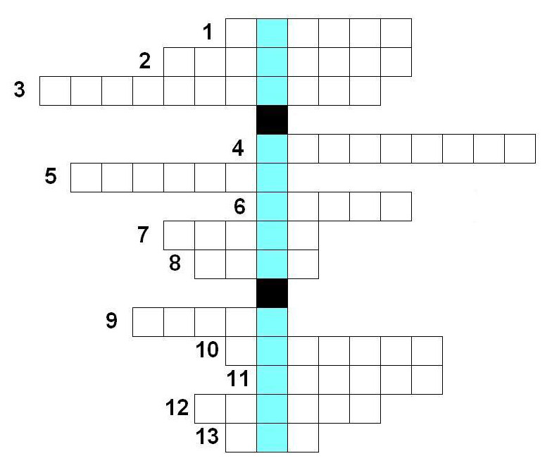
autor: Michał Bloch (uczeń, klasa 6)
-
Wyjazd nad morze 8 pkt.
Kasia miała 500,00 zł pojechała mad morze. Za wyjazd zapłaciła 150,50 zł. Kupiła pamiątki za 38,75 zł.
Ile zostało jej pieniędzy?
autor: Martyna Jaszczuk (uczeń, klasa 5)
-
Matematyka jest prosta! 8 pkt.
W konkursie matematycznym w 2007 r. w kategorii Maluch brało udział 98 303 uczniów, a w 2006 r. o 5 492 uczniów mniej. Ilu uczniów tej kategorii uczestniczyło w konkursie w 2006 r. ?
autor: Patryk Czubaszek (uczeń, klasa 4c)
-
Zadanie tekstowe o Ani 8 pkt.
Ania otrzymała ze sprawdzianu z matematyki 15 punktów i było to pięć ósmych wszystkich możliwych punktów do zdobycia. Ile punktów maksymalnie można było otrzymać z tego sprawdzianu?
Ania miała 90 zł. Na wycieczce wydała trzy piąte swoich oszczedności. Ile pieniędzy zostało Ani?
autor: Katarzyna Sławek (uczeń, klasa 5)
-
Jabłka Zuzi 8 pkt.
Zuzia zbierała jabłka z sadu. Na jednej jabłoni rosło łącznie 50 jabłek. W jednym koszu mieści się tylko 30 jabłek.
Ile koszy użyła Zuzia skoro wiadomo, że zebrała wszystkie jabłka z pięciu jabłoni?
autor: Katarzyna Chmiel (uczeń, klasa 5)
-
Pająki i żuki 8 pkt.
Harcerz zebrał do pudełka pająki i żuki - ogółem 8 sztuk. Jeśli policzymy wszystkie nogi w pudełku, to okarże się, że jest ich 54.
Ile jest w pudełku pająków i żuków?
Podpowiedź (żuk ma 6 nóg, a pająk 8).
autor: Wiktoria Bachman (uczeń, klasa 6)
-
Kręgle 8 pkt.
Rodzina Kasi poszła na kręgielnię. Każdy uczestnik miał swoje stoisko, przy którym była wyznaczona ilość kręgli. Kasia przy swoim stoisku miała 4 kręgle, brat kasi miał 6 kręgli, mama miała 8 kręgli, a tata 10. Ile razem kręgli ma rodzina Kasi?
autor: Kasia Konopacka (uczeń, klasa 4c)
-
Prędkości Ziemi 7 pkt.
Przyjmując, że Ziemia jest kulą. Średnica Ziemi 44 000 km, prędkość obrotowa równa jest 360 stopni na dobę. Oblicz z jaką prędkością przemieszcza się punkt na równiku Ziemi?
autor: Tymoteusz Zaręba (uczeń, klasa 5)
-
Szkoła 7 pkt.
W szkole jest 60 uczniów na zawody miało jechać 30 uczniów. Jednak 5 było chorych, 7 nieobecnych, a jeszcze 3 miało zwolnienie lekarskie. Ile uczniów jedzie na zawody?
autor: Daniel Stefen (uczeń, klasa V)
-
Zwierzaki 7 pkt.
Na podwórku są konie, świnie, kury i koguty. Razem jest 120 zwierząt. Koni jest 20, świń - 40, a kur -50. Ile jest:
a) kogutów?
b) nóg koni?
c) nóg świń?
d) nóg kur?
e) nóg kogutów?
f) które zwierzę ma najwięcej nóg, a które ma najmniej nóg?
autor: Julia Michalska (uczeń, klasa 5)
-
Sad jabłonii 7 pkt.
Pan Kwiatkowski ma działkę o długości 500 m i szerokości 350 m. Na działce chce posadzić jabłonie. Jedna jabłoń zajmuje 2 metry kwadratowe. Na jabłoni rośnie średnio 20 kg jabłek. Kilogram jabłek kosztuje 2 zł 43 gr. Przy zbieraniu jabłek pracowało 20 pracowników. Pan Kwiatkowski każdemu z nich musi zapłacić 1200 zł.
Za ile sprzeda jabłka z sadu pan Kwiatkowski? Ile zostanie mu pieniędzy po opłaceniu pracowników?
autor: Maja Słowińska (uczeń, klasa IV)
-
Bieg 7 pkt.
Czterech biegaczy postanowiło zorganizować między sobą wyścig na 100 metrów. Niestety bieg odbył się bez sędziego i po przekroczenu mety:
- pan Adam powiedział, że pan Cezary był pierwszy, a pan Bartek był drugi,
- pan Barek powiedział, że pan Cezary był drugi, natomiast pan Damian był trzeci,
- pan Cezary powiedział, że pan Damian był ostatni, a pan Adam był drugi,
- pan Damian nic nie powiedział.
Każdy biegacz, który podał dwie informacje raz skłamał, a raz powiedział prawdę. Jaka była kolejność na mecie?
autor: Sylwia Wawrzon (uczeń, klasa VI)
-
Kasia wymyśliła pewną liczbę 6 pkt.
Kasia wymyśliła pewną liczbę. Odjęła od niej 100 i podzieliła przez 7 i otrzymała 104.
Jaka to liczba?
autor: Mateusz Filip (uczeń, klasa 3)
-
Co to za liczba 6 pkt.
Mamy liczbę: 72989638
Znajdź liczbę, której:
- liczba dziesiątek to 7 cyfra powyższej liczby,
- liczba jedności to większa cyfra od 7, ale mniejsza od 9.autor: Kacper Janczy (uczeń, klasa 2)
-
Konkurs w zbieraniu kasztanów 6 pkt.
Zosia zbierała kasztany na konkurs. W każdym worku miała 30 kasztanów, a worków miała 4. Godzinę później nazbierała kolejne 4 worki, a po 5 godzinach miała już 20 worków. Połowa worków rozerwała się i z każdego wyleciało po 5 kasztanów.
Jaką ilość kasztanów Zosia oddała na konkurs?
autor: Martyna Wiśniewska (uczeń, klasa 4)
-
Zoo 6 pkt.
W Z00 pani dyrektorka liczyła zwierzęta. Naliczyła 15 zebr, 12 żyraf, 10 samic lwów, 12 lwów, 20 małych lwątek i 29 pum.
Ile było dzikich kotów?
Ile było zwierząt?
autor: Agata Janicka (uczeń, klasa 3a)
-
Zagadkowe zabawki 6 pkt.
Dzieci z 2b przyniosły do szkoły swoje ulubione zabawki. W klasie jest 20 uczniów, a 3 była nieobecna. Każdy przyniósł po 4 zabawki oprócz 2 dzieci, która przyniosła 7 zabawek. Ile łącznie zabawek przynieśli uczniowie?
autor: Dominika Wiśniewska (uczeń, klasa 6)
-
Kwiaty Ali 6 pkt.
Ala w poniedziałek podlała 1/4 kwiatów, w środę podlała 1/6 kwiatów, a w piątek podlała 1/3 kwiatów.
Jaką część kwiatów podlała w sumie Ala?
autor: Kornel Ugorski (uczeń, klasa 5)
-
Szkoła 6 pkt.
Do szkoły chodzi 460 uczniów. Pewnego dnia 40 uczniów zachorowało, 18 jest nieobecnych, a 2 nieprzygowanych. Ilu uczniów było obecnych w szkole?
autor: Kacper Dyl (uczeń, klasa 5)
-
Rybki i akwaria 6 pkt.
Adam ma 20 akwariów. W każdym akwarium 40 rybek. Każda rybka na dzień zjada 20 płatków pokarmu.
Ile płatków zjedzą ryby w ciągu 52 tygodni?
autor: Dominik Pfitzner (uczeń, klasa IV)
-
Anitka u dentysty 5 pkt.
Mała Anitka ma 11 lat poszła do dentysty. Lekarz usunął jej jedną dwójkę i dwie trójki.
Ile zostało jej dwójek?
autor: Natalia Koralewska (uczeń, klasa 2 S)
-
Jasio pod jabłonią 5 pkt.
Jasio leży pod jabłonią. Patrzy do góry i widzi jabłka, patrzy na dół nie ma jabłek. Zasnął. Jak się obudził spojrzał do góry, nie ma jabłek. Patrzy na dół nie ma jabłek. Co się stało?
autor: Anna Juszczyk (uczeń, klasa 5a)
-
Mały biegnący lampart 5 pkt.
Mały lampart w ciągu godziny przebiega 70km/h.
Ile przebiega w ciągu jednej całej doby?
autor: Adam Socha (uczeń, klasa 3a)
-
Mustangi 5 pkt.
Na stepach pasło się stado Mustangów z PEWNĄ liczbą osobników.
Nagle od stada odbiegło 9 koni i stado osiągneło liczbę osobników 135.
Następnie przybiegło piętnaście klaczy, każda z jednym źrebakiem oraz czter ogiery.
Z ilu osobików składa się stado teraz, a z ilu na początku?
autor: Jagoda Burzyńska (uczeń, klasa #)
-
Dziwne liczby 5 pkt.
Są to liczby 7 cyfrowe (bez liczb po przecinku). Występują w nich tylko dwie cyfry, z czego jedna pojawia się tylko raz. Pierwszą cyfrą jest 1. Liczby te dzielą się przez tylko dwie jednocyfrowe liczby. A wynik tego dzielenia składa się z sześciu cyfr i tak samo występują w nim tylko dwie cyfry, z czego jedna pojawia się tylko raz. Ile jest liczb 7 cyfrowych spełniających te warunki?
autor: Klaudia Roszak (uczeń, klasa 6)
-
Cukierki 5 pkt.
Kasia kupiła cukierki. Gdy położyła je na stole tata zjadł 5 cukierków, mama 7, a brat 10. Kasi został 1 cukierek.
Ile Kasia miała cukierków?
autor: Emilia Paterek (uczeń, klasa IVa)
-
Mnożenie i dzielenie w zakresie do 25 5 pkt.
Mama upiekła 24 babeczki. Kasia i Maciek zjedli połowę babeczek. Maciek zjadł 2 razy więciej babeczek niż Kasia. Ile babeczek zjadła Kasia, a ile Maciek?
autor: Maciej Bujak (uczeń, klasa 2)
-
Ułożenie Porządkowe 5 pkt.
12
24
22
44
42
Co dalej ? Podaj następne dwie liczby
autor: Sandra Roman (uczeń, klasa 5)
-
Samochody 5 pkt.
Na postoju stało 20 samochodów. Po chwili odjechało 10.
Ile samochodów zostało? Ile opon samochodów zostało?
autor: Wiktoria Pękala (uczeń, klasa 3B)
-
Parking 5 pkt.
Na parkingu stało 31 samochodów. Po południu wyjechało 7, a przyjechało 2/3 tych co zostało. Wieczorem odjechało 2/4, a przyjechało 3/2 tych co zostało. Ile samochodów było wieczorem, a ile po południu?
autor: Wiktoria Ziarnek (uczeń, klasa VI)
-
Działanie matematyczne 4 pkt.
Podaj wynik tego działania:
2+2*2= ?
słownie:
dwa dodać dwa razy dwa równa się ?
autor: Monika Babilas (uczeń, klasa 5)
-
Krowy na farmie 4 pkt.
Na farmie jest 7 rzędów w każdym stoi 7 krów . Rolnik musi je wszystkie wydoić w 2 dni. Pierwszej nocy uciekło mu 6 krów . Ile krów zostało do wydojenia?
autor: Borys Lassek (uczeń, klasa 3)
-
Dodawanie liczb 4 pkt.
5000+5000=
2+2=
5+5=
10+10=
autor: Szymon Roszczyk (uczeń, klasa 5)
-
Wyliczanka 4 pkt.
Michał ma 2345 dni swojego żcia. Ile będzie miał za 2 lata?
autor: Mateusz Filip (uczeń, klasa 3)
-
zadania 4 pkt.
W stołówce jest 5 stolików 4-osobowych, 7 stolików 6-osobowych i 8 stolików 2-osobowych. Uczniowie zajęli 59 miejsc.
Ile pozostało miejsc wolnych?
autor: Mateusz Filip (uczeń, klasa 3)
-
Cukiernia 4 pkt.
Cukiernia przygotowała 7 porcji lodów malinowych po 3 gałki, 9 porcji lodów czekoladowych po 4 gałki i 5 porcji lodów pistacjowych po 3 w każdej porcji.
Ile gałek lodów użyto w cukierni?
autor: Mateusz Filip (uczeń, klasa 3)
-
Bukiety kwiatów 4 pkt.
Maja wybrała się do lasu i nazbierała 3 bukiety kwiatów, które składały się z 8 kwiatków. Podzieliła je równo pomiędzy 4 swoje koleżanki.
Ile kwiatów dostała każda z nich?
autor: Emilia Paterek (uczeń, klasa IVa)
-
Dodawanie w zakresie do 50 4 pkt.
Kasia i Maciek pomagali mamie piec ciasteczka. Kasia zrobiła 6 serduszek, Maciek 10 gwiazdek, a mama 4 kwiatki . Ile upiekli ciasteczek?
autor: Maciej Bujak (uczeń, klasa 2)
-
Dodawanie w zakresie do 50 i myślenie :) 4 pkt.
W sklepie było 8 czerwonych i 2 białe piłki. Piotrek oglądał 2 piłki. Ile piłek było w sklepie?
autor: Maciej Bujak (uczeń, klasa 2)
-
Łamigłówka 4 pkt.
Książki kosztują o 14 zł więcej niż komiks i o 28 zł więcej niż łamigłówki.
Ile kosztują łamigłówki, jeśli komiks kosztuje 17 zł?
autor: Bartek Filip (uczeń, klasa 1)
-
Kwiatowe zamieszanie 4 pkt.
Mama Muminka zbierała kwiaty na przyjęcie. Zebrała 24 czerwone kwiaty, o 76 więcej białych, o 24 więcej niebieskich niż czerwonych, 2 razy mniej różowych niż czerwonych i o 6 mniej żółtych niż czerwonych. Ile zebrała wszystkich kwiatów?
autor: Joanna Korcz (uczeń, klasa 3d)
-
Pociąg 4 pkt.
84 osoby wsiadły do wagonu pociągu jadącego do Poznania. Maksymalna liczba miejsc w tym wagonie wynosi 47. Miejsc siedzących jest tylko 29.
Ile osób będzie odbywało podróż na stojąco?
Ile osób będzie musiało przesiąść się do drugiego wagonu?
autor: Magdalena Falkowska (uczeń, klasa VI)
-
Zakręcone liczby 3 pkt.
Ola ma 162 zł, Przemek ma 136 zł, a Otylia ma 547 zł.
Ile pieniędzy mają dzieci razem?
autor: Otylia Pawlak (uczeń, klasa 3a)
-
Odjazd z plaży 3 pkt.
20.12 2001 r. o godzinie 20:30 rodzinka Duncannów pojechała na plażę nad bałtykiem. Wróciła 20.12 2002 r. o godzinie 20:30.
Ile godzin rodzinka była na plaży?
autor: Julia Andrychowska (uczeń, klasa 4C)
-
Pole i obwód trapezu 3 pkt.
Pole trapezu równoramiennego wynosi 120 cm2. Dłuższa podstawa jest 3 razy większa od krótszej podstawy, a wysokość wynosi 4 cm. Ile wynosi obwód, jeśli ramię jest 5 razy krótsze od dłuższej podstawy?
autor: Przemysław Beyrowski (uczeń, klasa 6 a)
-
Soczyste owoce 3 pkt.
Na talerzu leżą owoce: jabłka, banany i kiwi. Razem owoców było 35 - 15 jabłek i 15 bananów.
Ile było owoców kiwi?
autor: Joanna Kosacka (uczeń, klasa 3)
-
Ile to jest? 3 pkt.
Jeżeli dodam do niej 100 i otrzymam 800?
autor: Kinga Wysocka (uczeń, klasa 1)
-
Podróż autokarem 3 pkt.
Na początkowym przystanku wsiadło do autokaru 8 osób, na kolejnym wsiadło 12 pasażerów, a wysiadło 4. Ile osób jedzie na kolejny przystanek?
autor: Weronika Kanabaj (uczeń, klasa 6)